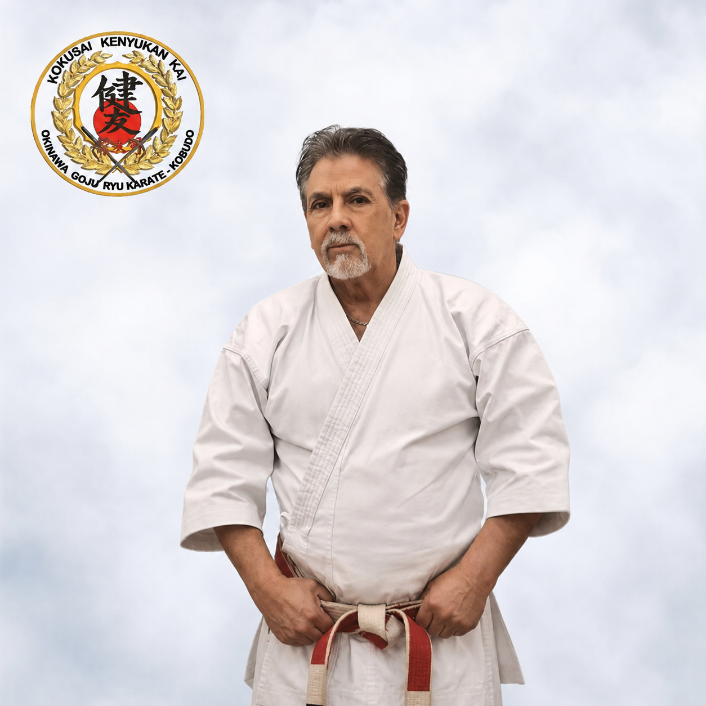

KKOGK History
Kokusai Kenyukan Kai Okinawa Goju-Ryu Karate Kobudo

Alexander de Araya-Soshi

What is the KKOGK?
The Kenyukan Goju Ryu Karate Academy was established in Sydney, Australia in 1973, under the direction of Sensei Alexander de Araya, Soshi 9th Dan Goju Ryu karate, 5th Dan Kobudo, 2nd Dan Aikijutsu.
Sensei started his Martial studies in 1964 in Goju Kai Karate Do, under the guidance of Sensei E Ramirez who was at the time the only Goju Ryu practitioner from Latin America, trained and graded by Gogen Yamaguchi Hanshi at the Goju Kai Karate College in Tokyo, Japan. Later he (Sensei Ramirez) went onto become Morio Higaona's representative for the whole of the Americas for the IOGKF and Sensei de Araya also took a turn to Okinawa Goju Ryu late in 1980. In the year 2000 while staying in China he also studied the Tigwa (oldest form of Goju Ryu) under Shifu Ming Kau Lai.
During the course of 48 years, Sensei has had the pleasure and the humility to train under many of the most senior Sensei's in the Goju Ryu world, including M. Higaona, G Yamaguchi, M Nakayima, K Kuniyuki, K Nakamura, his friend and mentor Hanshi K Nakahoto 10th dan, and several of Shimpo Matayoshi's top students, and has kept credit to all those who helped him achieve the position he holds today.
Our karate system combines the best aspects of Japanese and Okinawan Goju Ryu, Okinawa Kobudo and Aikijutsu and thanks to Sensei's research and expertise, we are now able to merge these systems into one formidable weapon. Sensei believes the Art of Karate-do alone is not enough to develop good all-around combat skills, that's why the system also incorporates the study of Okinawa weapons of self-defence (Kobudo) and close combat techniques at short range, armed and unarmed. As you know, White Crane Gong Fu and Goju Ryu Karate techniques, were especially designed for close combat, therefore, they are easily applied in real combat situations.
Sensei has been deeply involved in the development of our karate, and this has taken him too many places where he has trained with many people, especially in Japan and Okinawa. The proof is, - the many champions, our people, the many affiliated Sensei's whom have chosen him as their tutor and guide, the many students and truly magnificent people whom after more than 42 years since he started teaching, still call him Sensei.
In 2009 Sensei de Araya was honored with admission to the Dai Nippon Butokukai, an elite Organisation of Japanese Martial Arts created in Kyoto in 1895.
In the year 2010, he was also awarded the prestigious Lifetime Achievement Award, by the Australasian Hall of Fame.